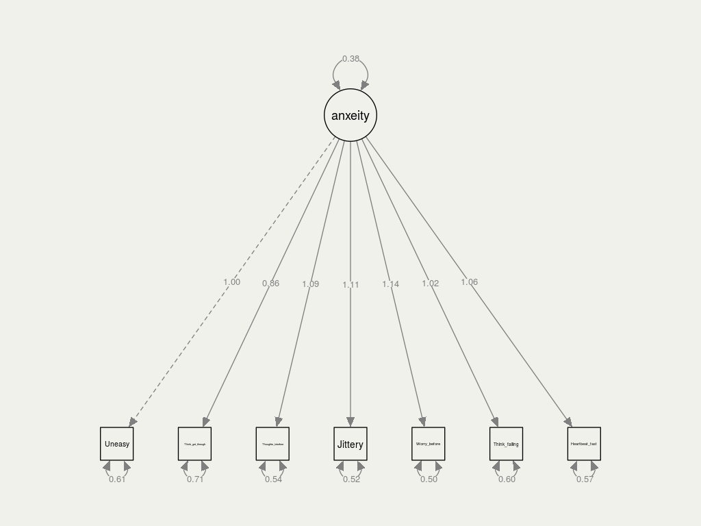
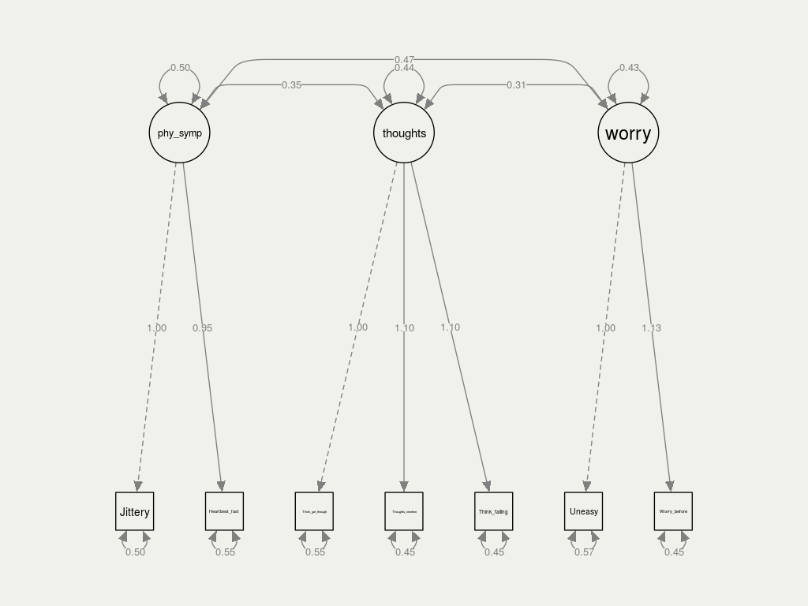
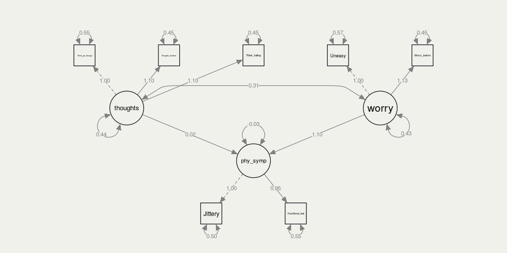
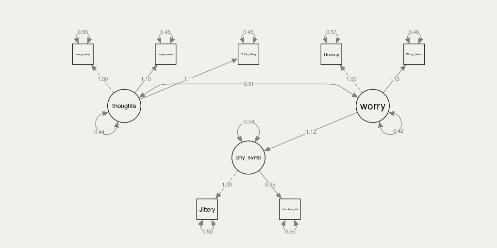
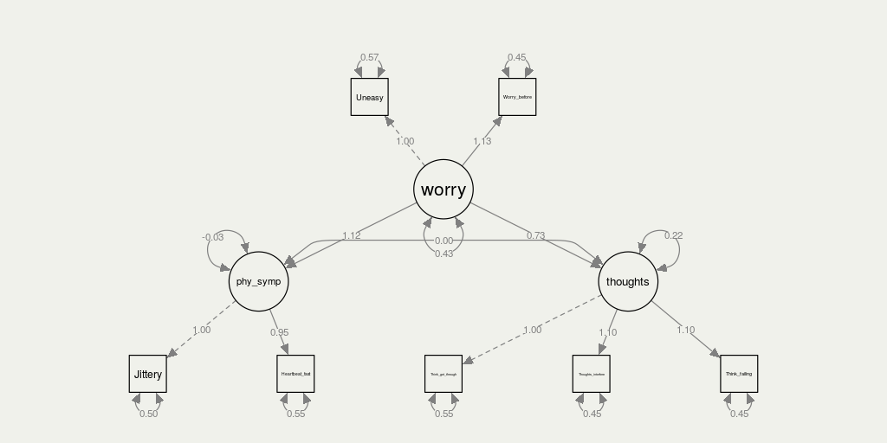
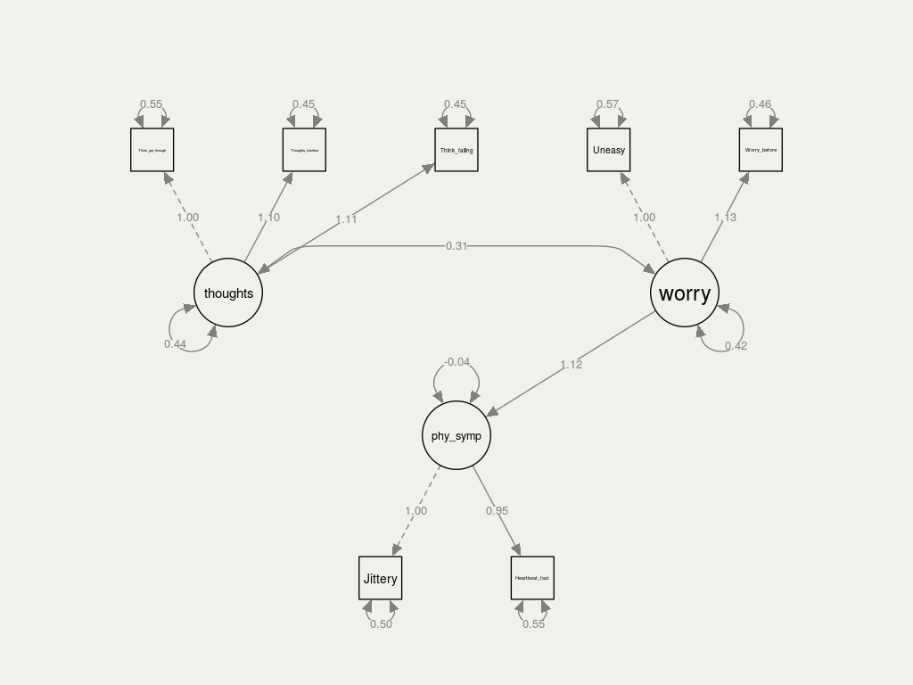

Latent variables = variables we can not observe
We have to define them in terms of other variables
Factor analysis = We use observed, correlated variables to describe the variation in the factor (latent variable)
We use SEM - Structural Equation Modeling, to make our causal models.
Dataset is from 1996
Measures test anxiety of Canadian high school students.
It contains 724 observations and 20 variables, from which we use 335 observations (the male students) and 7 variables.
The variables we use from our dataset are the following:
Uneasy, upset feeling
Jittery when taking tests
Worry before important tests
Heart beating fast during tests
Thinking about getting through school
Thoughts interfere with concentration
Think about failing
We wish to observe latent variables that are expressions of test anxiety. We have divided them into 3 different factors:
physical symptoms (#2, #4)
intrusive thoughts (#5, #6, #7)
worrying (#1, #3)
In God we trust. All others must bring data.
by
W. Edwards Deming,
statistician
| jittery | heart rate | think get through | think interfere | think failing | Worry before | Uneasy |
|---|---|---|---|---|---|---|
| -0.86 | -0.55 | -0.46 | 0.25 | -1.18 | -0.35 | -1.22 |
| 0.27 | 1.39 | 0.99 | -0.29 | -0.57 | -0.51 | -0.42 |
| -0.73 | 0.83 | -0.73 | -0.86 | -2.77 | 0.20 | -0.74 |
| 0.54 | 1.13 | -0.31 | 0.71 | 0.54 | -0.70 | 0.75 |
| -0.87 | -0.49 | -1.35 | -0.05 | -0.68 | -1.67 | -0.23 |
| -0.28 | -0.30 | -0.39 | 0.12 | 0.21 | -1.79 | 0.68 |
| 0.92 | -0.58 | -0.68 | 0.44 | 0.20 | -0.27 | 1.11 |
| 0.26 | -2.49 | -3.27 | -0.50 | -0.16 | -2.90 | -1.98 |
We expect that:
all the measurements
have positive effect
on the latent variable

| latent | measurement |
|---|---|
| physical symptoms | jittery |
| heart_rate | |
| intrusve thoughts | think_get_through |
| thoughts_interfere | |
| Think_failing | |
| worrying | Worry_before |
| Uneasy |
We expect that:
physical symptoms,
intrusve thoughts,
and worrying
positively correlated with each other




| Model | AIC | BIC | CFI | RMSEA | SRMR |
|---|---|---|---|---|---|
| One-factor model | 5999 | 6052 | 0.88 | 0.14 | 0.068 |
| Model1 | 5933 | 5998 | 0.98 | 0.07 | 0.036 |
| Model2 | 5933 | 5998 | 0.98 | 0.07 | 0.036 |
| Model3 | 5931 | 5992 | 0.98 | 0.07 | 0.036 |
| Model4 | 5933 | 5998 | 0.98 | 0.07 | 0.036 |
AIC (akaike information criterion)
BIC (bayesian information criterion)
CFI (comparative fit index)
RMSEA (root mean square error of approximation)
SRMR (Standardized Root Mean Square Residual)

Scale: 1 is starting from the minimum value until the minimum value plus a step.
10 is starting from the minimum value plus 9*step until the maximum value.
The step is calculated by:
\[step = \frac{max-min}{10}\]
| phy_symp | thoughts | worry | |
|---|---|---|---|
| Jittery | 0.71 | 0.00 | 0.00 |
| Heartbeat_fast | 0.67 | 0.00 | 0.00 |
| Think_get_through | 0.00 | 0.67 | 0.00 |
| Thoughts_interfere | 0.00 | 0.74 | 0.00 |
| Think_failing | 0.00 | 0.74 | 0.00 |
| Uneasy | 0.00 | 0.00 | 0.65 |
| Worry_before | 0.00 | 0.00 | 0.74 |
The person who are worry and unease before the exam
are more likely to
be nervous during the exam
Author:
Claes Kock
Mayara Latrech
Yuchong Wu
This presentation can be found on:
www.yu-chong.com/projects/factor
Feedback would be welcomed!